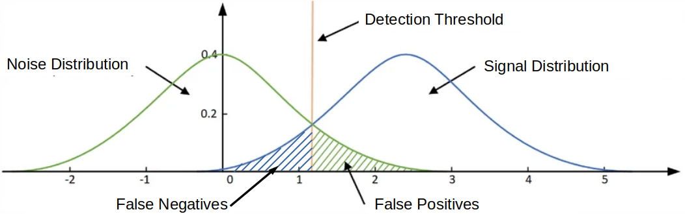
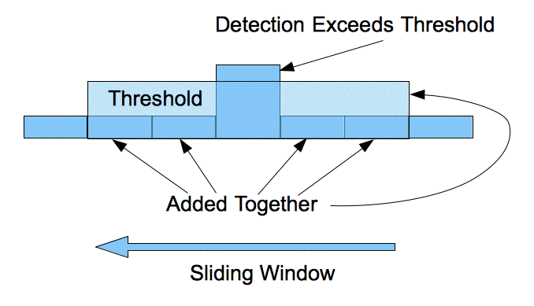
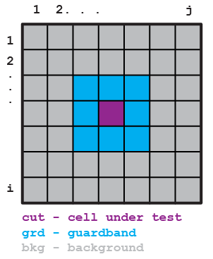
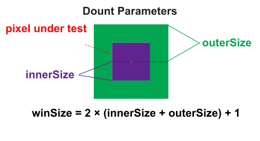
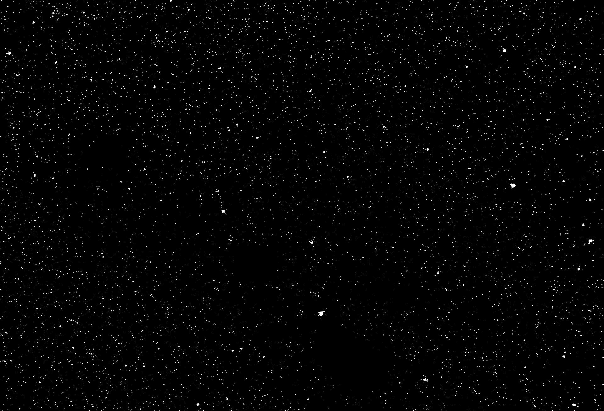

A 2D CFAR Detector with Intel IPP
August 18, 2026Here we demonstrate a two-dimensional (2D), background Gaussian statistics, Constant False Alarm Rate (CFAR) detector using Intel’s Integrated Performance Primitives (IPP).
Two-dimensional CFAR detectors are useful when detecting relatively small and bright clusters of pixels in an image. Two possible examples include separating man-made objects (i.e. partially metallic objects with right-angles) in Synthetic Aperture Radar (SAR) images from natural background, or finding bright astronomical objects (i.e. stars) in an image with a non-uniform background where simple thresholding is insufficient.
All of the code discussed below lives in the 2D_ipp_CFAR repository on GitHub.
Background
Constant False Alarm Detectors
The ability to differentiate target signal from background noise is an important problem, especially when the target and background distributions overlap. When there is overlap, perfect separation between target and background is impossible. Instead, a threshold value must be chosen such that values above are considered targets and values below are background. However, due to the overlap in distributions, there will be false positives (i.e. false alarms) and false negatives (i.e. missed targets).

Furthermore, when the background and target distributions are not fixed, a threshold needs to be recalculated throughout the image. The Constant False Alarm Rate (CFAR) detector updates the threshold value depending on a current estimate of the background. Assuming the background has a Gaussian distribution, the threshold is selected such that the probability of a false alarm is constant.

{kind=link}
Guard Band
Sometimes captured images will contain blooming/bleeding pixels. This phenomenon occurs when the intensity of the source overwhelms the detector and the electrons from one pixel well spill over into adjacent wells. To overcome this artifact, a guard band is used around the cell-under-test (also called the pixel-under-test).

The 2D CFAR detector geometry looks like a donut. The image background is the outer ring (shown in gray above and shown in green below). The guard band (shown in blue above and shown in purple below) excludes pixels surrounding the cell/pixel-under-test.

The background (outerSize) and the guard band (innerSize) need to be adjusted for the particular image collection.
The total size of the 2D area (window size) is given by 2 x (innerSize + outerSize) + 1.
Setup
IPP needs to be installed. A standalone installation of IPP is used. The code in the IPP getting started guide is copied to src/cpp/ipp_getting_started_example.cpp with the @ characters removed (g++ did not compile with unicode).
To compile:
source /opt/intel/oneapi/ipp/latest/env/vars.sh
g++ src/cpp/ipp_getting_started_example.cpp -o ipp_getting_started_example -I $IPPROOT/include -L $IPPROOT/lib/linux -lippcore
Finally, execute ./ipp_getting_started_example. You should see a print out of a table with features and their support.
OpenCV is used to read in images. It’s built from source. A function to test loading and displaying an image can be built and run with
g++ src/cpp/open_image.cpp -o open_image `pkg-config --cflags --libs opencv4` && ./open_image
The above code uses this star image, an open source image from Pixabay.
Main Program
Add IPP headers and libraries to path:
source /opt/intel/oneapi/ipp/latest/env/vars.sh
Build and run with:
g++ src/cpp/main.cpp -o main -I $IPPROOT/include -L $IPPROOT/lib/intel64 -lippi -lipps -lippcore -lippcv `pkg-config --cflags --libs opencv4` && ./main
Build and check for memory leaks with:
g++ src/cpp/main.cpp -g -O0 -Wextra -pedantic -Wshadow -I $IPPROOT/include -L $IPPROOT/lib/intel64 -lippi -lipps -lippcore -lippcv `pkg-config --cflags --libs opencv4` -o main && valgrind --leak-check=full --show-leak-kinds=all -s ./main
Example Output
Here we use this star image from Pixabay.
After processing with the 2D CFAR detector using IPP we get this output of outliers:

Testing
A version of the code, employing the same math, was written in Python and OpenCV. This allows a cross check of the IPP and C++ code. A script called src/python/create_test_image.py saves a test_image.png. This test image can be used with these parameters python src/python/main.py -I ./imgs/test_image.png -G 3 -B 7 and python src/python/main.py -I ./imgs/test_g_image.png -G 3 -B 7 -T 5 for the Gaussian background image, to verify the calculations are correct.
References and Further Reading
- Wikipedia article on Constant False Alarm Rate Detectors
- An, G., Huang, Z. & Li, Y. Constant false alarm rate detection of pipeline leakage based on acoustic sensors. Sci Rep 13, 14149 (2023).
The full source — the C++/IPP implementation, the Python cross-check, and the test image generator — is on GitHub at dennisfgardner/2D_ipp_CFAR.
Source code: https://github.com/dennisfgardner/2D_ipp_CFAR